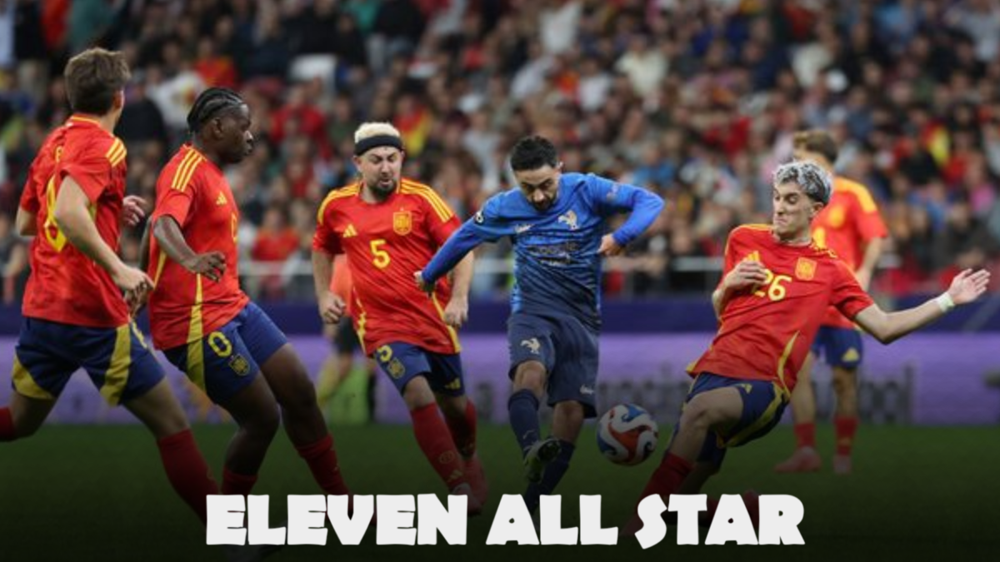

Football et polémiques : l’Eleven All Stars 2024, entre succès et incidents.
Le 12 octobre 2024, le stade Metropolitano de Madrid a accueilli la deuxième édition de l'Eleven All Stars. Toutefois, des incidents racistes ont terni l'événement, relançant le débat sur la place du racisme dans le sport.
Un match très attendu
L'Eleven All Stars, organisé par AmineMaTue et DjMariio, a réuni des créateurs de contenu français et espagnols pour un match à grand enjeu. Après une première édition à Paris en 2022, où les Français s’étaient imposés 2-0, ce match retour promettait d’être un grand spectacle. Devant plus de 20 000 spectateurs et des millions de viewers en ligne, l'Espagne a pris sa revanche en s'imposant à leur tour 2-0. La rencontre, pleine d'intensité, a aussi été marquée par une ambiance tendue, notamment avec les actions impressionnantes de Robledo et un penalty décisif transformé par DjMariio.
Un incident dans les tribunes du Metropolitano
Cet événement a suscité un fort engouement, notamment sur Twitch, avec la diffusion en direct sur la chaîne d’AmineMaTue, ainsi qu'au stade, où l'ambiance était électrique. Cependant, durant la rencontre, le streamer français Brawks a été victime de gestes racistes. Des cris de singes ont été rapportés ce qui a provoqué un choc chez les joueurs et les spectateurs. Cet incident rappelle tristement la persistance du racisme dans les stades espagnols, un problème régulier, en témoignent les nombreux actes dont est victime Vinicius Jr.
La réaction des joueurs et du public
Brawks, visiblement affecté par ces attaques, a pris la parole pour rappeler que « le racisme n’a pas sa place dans le sport ». Plusieurs joueurs espagnols, dont Koko, ont également exprimé leur soutien, Koko allant même jusqu'à verser des larmes à cause de cet incident. Malgré cette tension, le match a repris après plusieurs minutes d'interruption, ainsi les deux équipes ont pu finir la rencontre, bien que celle-ci ait été marquée par cette triste parenthèse.
L'édition 2024 de l'Eleven All Stars, qui devait être une fête du sport et du divertissement, a été gâchée par des comportements racistes dans les tribunes. DJ MARIIO, l'une des figures principales, n'a pas parlé de ce sujet après le match. Malgré le grand succès de l'événement, l'absence d'un troisième match pour départager les équipes laisse un goût amer et pousse à réfléchir sur le rôle du sport face à ces comportements.